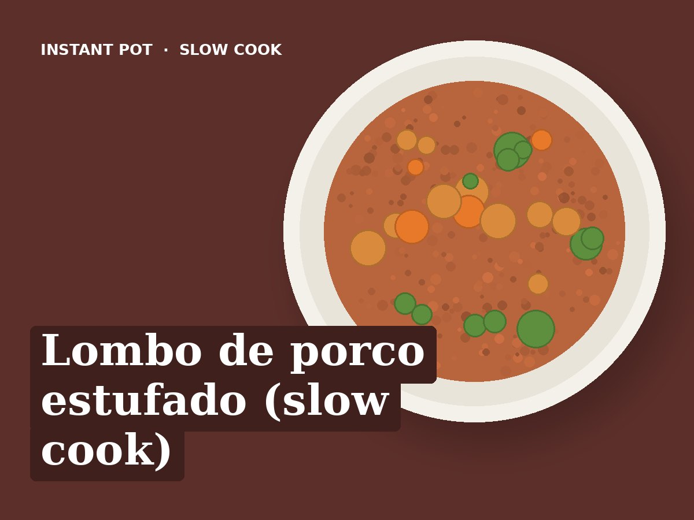

Lombo de porco estufado (slow cook)
Idioma: português de Portugal (pt-PT). Esta receita está escrita em português de Portugal. Ao importar, manter o título, os ingredientes e todos os passos em português, sem traduzir para inglês. Usar unidades métricas (g, ml, °C).
Ingredientes
- 600 g de lombo de porco em cubos grandes
- 1 cebola
- 2 dentes de alho
- 3 cenouras (cerca de 250 g)
- 2 batatas-doces (cerca de 500 g)
- 150 ml de água
- 1 folha de louro
- 1 colher de chá de colorau
- Sal q.b.
Preparação
- Pôr tudo na panela: a cebola às rodelas, a cenoura e a batata-doce em pedaços grandes. Mexer bem.
- Cozedura lenta (Slow Cook): Modo normal, 6 horas (ou modo alto, 4 horas).
- Provar e ajustar o sal antes de servir.